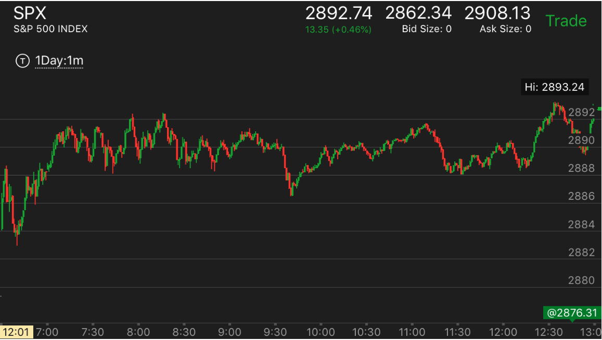

走势的合并
- 如果一个小的走势结束后，很长时间没有出现反转，那么这个小的走势会是更大走势的一部分，
那么这个小的走势虽然结束，更大走势没有结束。会在小走势的方向上持续
两段下跌后，震荡很久，继续大跌
陷阱大跌下跌后，震荡很久，继续大跌
两段下跌后，震荡很久，继续大跌:
TOP
1. 出现小的两段下跌，结果很久没有反弹。这样前面的两段下跌，成了更大的下跌的第一段。

图示：
1. 8:15出现了明显的两段下跌。非常的小。它应该反弹，结果它一直震荡，
很久也没有反弹。按理说，它反弹很慢，应该大涨才对。但是时间太长。而且它的震荡高点恰好填补了
两段下跌第二段的空。从时间上看，前面的两段下跌，应该结合成为一段。那么就成了一段下跌，应该有第二段。
9：30果然出现了快速下跌。成为第二段。
2. 这个走势，开盘出现了两段下跌后，上涨。结果这个上涨走势，一直没有结束。中间的下跌都是在填补真空。
中间创新高的时候，持续时间段，走势也很缓慢。
收盘大涨。
陷阱大跌下跌后，震荡很久，继续大跌:
TOP
1. 出现了陷阱大跌，应该反弹，超过下跌点。结果很久都没有。那么这个陷阱大跌就成了下跌的第一段。
应该还有第二段。

图示：开盘后，10：00出现了井的走势，大跌。这个应该是陷阱大跌。它
在底部震荡后，反弹。但是一直没有超过下跌高点。时间很久。从走势本身看，也不是一个涨的样子。
这样这个下跌就成了第一段下跌。未来还有第二段下跌。中间的长时间震荡是在填补真空。而不是反弹。